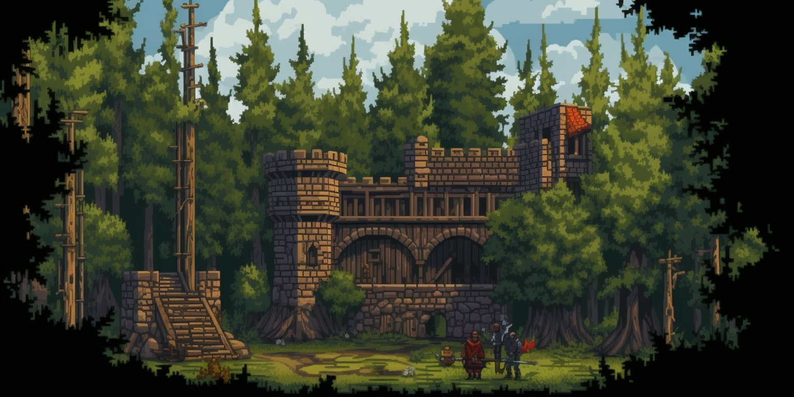

Guidebook: Settlements
Newharbor

The large and bustling port town of Newharbor is a hub of activity and commerce. Its bustling port serves as a gateway to the rest of the world, and ships from all over come to trade goods and services. The town is situated on a natural harbor, with a series of docks and piers jutting out into the sea, where ships of all sizes can be seen coming and going. As the players make their way through the streets of Newhaven, they are met with a cacophony of sounds and smells. The air is thick with the scent of saltwater and fish, and the sounds of seagulls can be heard overhead. The streets are crowded with people of all races and classes, and vendors hawk their wares from carts and stalls lining the road. The town itself is a maze of narrow, winding streets and alleyways, lined with tall, narrow buildings made of brick and stone. The architecture is a mix of styles, reflecting the town's history as a melting pot of cultures and influences. The buildings are adorned with colorful signs and banners, advertising the goods and services of the various shops and businesses. There is no shortage of amenities in Newhaven, with numerous inns, taverns, and restaurants offering a variety of food and drink. The town also boasts a bustling market district, where players can find everything from fresh produce and meats to exotic spices and rare artifacts. For those with a taste for adventure, there are plenty of opportunities to find work as mercenaries or adventurers, with various guilds and organizations operating out of the town. Despite its vibrant atmosphere, Newhaven is not without its dangers. The town is home to a number of criminal organizations, and pickpockets and thieves are a constant presence in the crowded streets. Players will need to keep their wits about them if they hope to survive and thrive in this bustling port town.
In the bustling port town where the players start their adventure, there is a well-known landmark that catches the eye of any traveler passing through. This landmark is the Lucky Adventure Fountain, located in the center of the town square. The fountain is made of polished stone and features a magnificent statue of a powerful dragon perched on top of a mound of glittering treasure. Water gushes out of the dragon's mouth and cascades down in a sparkling cascade, filling the basin below. Legend has it that the fountain is enchanted and has the power to bring good luck to adventurers who toss a coin into the basin and make a wish. The townsfolk believe that the fountain was created by an angel who wanted to help adventurers in their quests for glory and fortune. The fountain is a popular destination for travelers and locals alike, and it's not uncommon to see groups of adventurers gathered around the fountain, making wishes and sharing tales of their past adventures. Some even say that the fountain has a way of bringing together adventurers who are destined to join forces and embark on epic quests together. Despite its popularity, the Lucky Adventure Fountain is not without its detractors. Some skeptics scoff at the notion of an enchanted fountain, believing that its powers are nothing more than superstition and folklore. Others warn that there is a price to be paid for tempting fate and relying on luck rather than skill and preparation. Regardless of one's beliefs, there's no denying that the Lucky Adventure Fountain is an iconic landmark that symbolizes the spirit of adventure and the quest for fortune and glory.
Timberlake

The players arrive at the small, rustic town of Timberlake, nestled in the heart of a dense forest and situated on the shore of a large, crystal-clear lake. The town's main industries are fishing and trapping, and the streets are lined with shops and vendors selling fresh catches and pelts.The town's buildings are made of sturdy, locally-sourced timber, giving the whole place a rustic, frontier feel. The streets are narrow and winding, with few open spaces, giving the town a cozy and intimate atmosphere. Despite its small size, Timberlake is a lively and friendly place, with locals quick to strike up a conversation with strangers passing through. The town's residents are hardworking and self-sufficient, but they are also hospitable and always eager to welcome newcomers. The town's main gathering spot is a large, open square at the center of town, where locals and visitors alike come to relax and socialize. In the center of the square is a small fountain, which is said to bring good luck to those who toss a coin into its waters. The fountain is surrounded by benches and shade trees, making it a popular spot for picnics and outdoor gatherings. As the players explore the town, they will find a variety of services available to them, including a blacksmith, a general store, and an inn offering warm meals and a comfortable bed. However, they will also discover that the town has its share of problems, including a shortage of supplies and recent reports of increased bandit activity in the surrounding woods.
In the center of the town square of the small lakefront settlement, there stands a magnificent statue of the town's founder, a powerful wizard named Alaric. The statue is made of gleaming white marble, and it depicts Alaric with his staff raised to the sky, as if calling down the power of the heavens. The details of the statue are exquisitely crafted, from the intricate folds of Alaric's robes to the fine etchings on his staff. At the base of the statue, there are inscriptions in a language that few can read, detailing Alaric's accomplishments and contributions to the town. The townspeople are fiercely proud of their founder and his legacy, and they gather around the statue on special occasions to honor his memory. Some even believe that the statue has magical powers, and that by touching it, one can be blessed with good luck or granted a wish. The statue is also a popular destination for visitors to the town, who marvel at its beauty and the impressive history of the wizard who built the settlement. For many, it serves as a symbol of hope and inspiration, reminding them of the great feats that can be achieved through determination and magic.
Wagonshire

The third settlement the players will reach is a medium-sized semi-permanent camping ground located on the edge of a vast, open plain. The settlement is bustling with activity, as several groups of settlers have made it their home, setting up tents, wagons, and several small farms. The campgrounds are arranged in a semi-circle around a central fire pit, where travelers and settlers gather to socialize and trade stories. The tents are made of sturdy canvas and are arranged in neat rows, with narrow pathways in between. Each tent is equipped with basic amenities, including a small stove for cooking and heating, a few simple pieces of furniture, and some bedding. The wagons, which are parked in a separate area, are used for transportation and storage. They are heavily loaded with supplies and equipment, and some even have small, makeshift living quarters built into them. The farms, located on the outskirts of the settlement, are small but efficient, with crops ranging from potatoes and carrots to corn and wheat. Some settlers also keep livestock, including cows, pigs, and chickens. At the center of the settlement, there is a large statue of the founder of the town, a legendary adventurer and explorer who led several expeditions into the wilderness. The statue is made of bronze and depicts the founder in full regalia, holding a staff and wearing a wide-brimmed hat. On the base of the statue, there is an inscription that reads, "In honor of our founder, who led us into the unknown and showed us the way." As the players approach the settlement, they can hear the sound of people working and animals braying, and they can see the smoke rising from the campfires. The air is filled with the smell of cooking food and the sound of laughter and chatter. The settlers welcome the players warmly, and offer them food and shelter, happy to share their home on the trail.
Suntone

Sunstone is a small town nestled on the trail, serving as the gateway to the treacherous mountain pass. This charming western settlement exudes a unique character and resilience in the face of adversity. Sunstone's heart lies along a single gravel street lined with weathered buildings that bear the marks of time and countless tales of rugged pioneers. The town basks in perpetual sunshine, its name derived from the radiant warmth that bathes its surroundings. Sunlight dances off the dusty trails, painting the landscape in vibrant hues of gold and amber. However, the land tells a different story. The soil beneath Sunstone's feet is rocky and unforgiving, posing challenges for the resilient farmers who call this place home. Yet, they persevere, tending to their crops with unwavering determination, carving out sustenance from the land's rocky embrace. As you stroll down the main street, you'll find a colorful assortment of buildings that have weathered countless storms. The general store, with its creaking wooden porch and faded sign, welcomes weary travelers with essential supplies and tales of the trail. The local saloon, its swinging doors beckoning with the sound of lively conversation and the clinking of glasses, offers respite and camaraderie to locals and adventurers alike. Sunstone is a place of resourcefulness and ingenuity. The town's blacksmith forges sturdy tools and repairs worn wagon parts, ensuring that travelers can face the imminent mountainous challenges that await them. A small clinic staffed by a skilled healer provides aid to those in need, mending bodies worn by the trail's harsh realities. Beyond the town's borders, the wild and untamed wilderness unfolds. The dense woods, their ancient trees standing sentinel, harbor secrets and provide refuge to creatures unseen. The shimmering desert looms nearby, its arid winds whispering tales of adventure and hidden treasures to intrepid souls. Sunstone, with its resilient inhabitants and rugged beauty, embodies the spirit of the new west. It serves as the last beacon of civilization before the arduous journey through the imposing mountains. As you prepare to traverse this perilous pass, take a moment to soak in the warmth of the sun, and let the spirit of Sunstone fuel your determination for the challenges that lie ahead.
Fort Valor
Fort Valor, nestled deep within the verdant embrace of the dense woods, stands as a bastion of strength and resilience. This formidable fortress serves as the main outpost for the military forces engaged in a long-standing conflict with the native Kaltok tribes. As travelers approach its imposing gates, they are greeted by the sight of tall, sturdy walls built from weathered stone and wood. Within the fort's confines, the atmosphere crackles with a palpable sense of duty and preparedness. Soldiers clad in armor patrol the ramparts, their eyes watchful and their weapons at the ready. The strategic placement of the fort allows for a commanding view of the surrounding forest, ensuring the safety of its inhabitants. While Fort Valor is primarily a military stronghold, it offers basic services to weary travelers passing through. A modest trading post, strategically located near the entrance, allows for essential supplies and provisions to be obtained. Here, one can find simple but vital goods such as food rations, weapons, and armor, albeit in limited variety. The fort's interior reveals a utilitarian arrangement of buildings, with barracks and training grounds providing ample space for soldiers to rest and prepare for their duties. A central courtyard serves as a gathering place for important announcements and training exercises, fostering a sense of camaraderie and purpose among the troops. As the sun filters through the thick canopy overhead, casting dappled shadows on the fort's grounds, visitors will catch glimpses of soldiers engaged in training exercises and drills. The air is infused with the scent of pine and earth, and the surrounding woods echo with the songs of birds and the gentle rustling of leaves. While Fort Valor lacks the amenities and luxuries of larger settlements, its unwavering dedication to its purpose and its vital role in safeguarding the region make it a beacon of strength. It stands as a testament to the kingdom's commitment to maintaining control over these lands, offering a brief respite for travelers before they continue their perilous journey through the treacherous mountains that lie ahead.
Ohterlon

Nestled beyond the treacherous mountains and dense forests lies the breathtaking expanse of Ohterlon, a land brimming with natural beauty and untamed potential. As the final destination along the trail, Ohterlon represents a new chapter for those who have persevered through the arduous journey. Upon entering Ohterlon, one is greeted by rolling hills that stretch as far as the eye can see. The undulating terrain offers a picturesque landscape, dotted with clusters of sturdy trees and meandering creeks that weave through the land like lifelines of vitality. The air is crisp and refreshing, carrying the fragrant scents of wildflowers and the faint whispers of possibility. In this vast expanse, there are no bustling towns or bustling settlements. Instead, scattered throughout the land, you will find occasional cabins, farms, and mines, humble testaments to the indomitable spirit of those who have ventured this far. These brave souls, having conquered the challenges of the trail, have established their own havens amidst the natural wonders of Ohterlon. Cabins, crafted from sturdy timber, blend harmoniously with the surrounding landscape, their warm hearths beckoning weary travelers to find solace within their walls. Farms emerge from the fertile soil, their crops reaching towards the sky in an offering of sustenance and hope. Mines delve deep into the earth, unearthing precious resources that hint at the untapped potential Ohterlon holds. Despite its nascent state, Ohterlon hums with an air of opportunity. Those who have chosen to settle here are driven by a pioneering spirit, forging their own path and shaping the destiny of this land. They work hand in hand with nature, carving out their livelihoods, and building a community rooted in resilience and camaraderie. As the sun casts its golden glow over the hills of Ohterlon, casting long shadows that dance among the trees, it serves as a reminder that the journey, though arduous, has led to a place of unparalleled beauty and promise. The land awaits those who dare to dream, those who yearn to leave their mark upon the canvas of this emerging frontier. Ohterlon beckons with open arms, inviting adventurers to explore its unspoiled vistas, to build anew amidst its hilly embrace, and to bask in the serenity of a land that holds both mystery and the potential for great prosperity. The journey's end marks a new beginning, as the pioneers of Ohterlon embark on their quest to shape their destinies and create a future filled with promise and possibility.